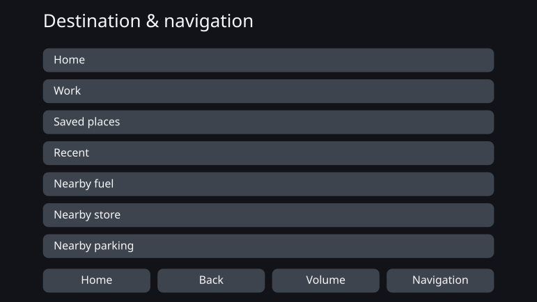
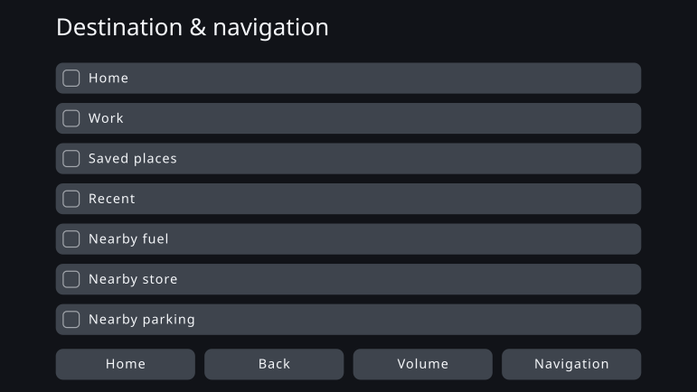
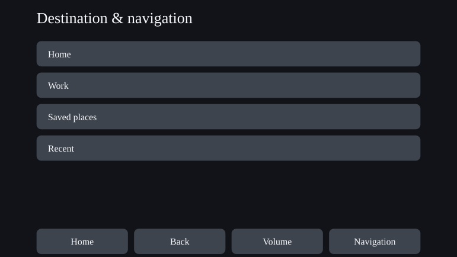

Personal Fit UI - Personalising Interfaces Through Constraint-Driven Design
August 2026
Overview
Everyone uses the same interface in the same way. This work sets that mass-production premise aside and asks whether an interface can instead be generated to fit one person’s cognitive, sensory and physical characteristics.
What it aims at is not a screen that keeps changing with the situation while it is in use. It is a mechanism that takes in a person’s characteristics at the point they start using the product and generates an interface suited to them in advance, while holding to the constraints that safety and accessibility impose.
The work puts into practice an idea I call constraint-driven design. A human, working from the literature and from standards, defines the directions of adjustment and the boundaries to stay within. Inside that frame, AI decides the concrete values and wording, and what it generates is checked for violations.
The proof of concept took a car navigation system as its subject and generated interfaces for thirteen personas with differing characteristics. Almost nothing changed visibly. What the work did yield came out of writing the constraints down in a form that can be checked: it showed where room for individualisation remains, and where the constraints consume it.
Handing one interface to everyone
Most products today are designed on the assumption of mass production: one interface, covering as many people as it can. Even where text size or the number of items on screen can be changed, it is the user who has to find the state that suits them and set it.
This works for a great many people. But fitting many people and fitting everyone are not the same thing. A product can satisfy every shared design standard and still leave people for whom that interface is hard to use.
The same structure is visible in how in-vehicle interfaces are assessed. The acceptance procedure NHTSA uses for eye glances while driving does not require every participant to meet the criterion. A task passes when 21 of 24 participants meet it, so a certain number of people failing is written into the procedure from the outset. A submission made to the regulator by carmakers goes further, reporting roughly one person in six who consistently looks away for longer across several tasks. That submission came from the manufacturers subject to the rule, and it argued for relaxing the criterion. What is proposed here is not a relaxed criterion but individualisation that increases how many people can meet the existing one.
The point of an individualised interface is not to make everyone’s screen novel. It is to bring the people a uniform interface was dropping into the range where they can use it, and operate it safely.
Until now, the cost of designing one interface for one person was not realistic. Now that AI can be treated as part of the design process, that premise is beginning to change.
Car navigation as the subject
The subject of this work is not car navigation but the individualised interface. Car navigation was chosen as one case in which its possibilities and its limits could be examined.
An in-vehicle interface carries hard constraints: a limited screen, very little time to look at it, and the safety of every interaction. Before shipping it is validated as a uniform interface that most people can use — and the same interface then goes to the people that design does not suit.
If individualisation holds up in a domain constrained this tightly, the idea of constraint-driven design can be tested concretely. Equally, the constraints may leave AI almost no freedom at all. The subject makes both outcomes observable.
In Japan as of 2026, models that support over-the-air updates and conventional factory-fitted navigation units that do not are both on the road. And even where map data can be updated, the basic structure of the interface is not necessarily redesigned again and again after purchase. This proof of concept assumes a system whose interface is not updated often once it is in use.
Making individualisation something a system can generate
Constraint-driven design means fixing the frame explicitly and then letting AI move inside it flexibly, with a feel for nuance. Unlike a parametric mechanism that reads values out of a settled table, what is designed is the range of solutions the AI is free to search.
The science does not always go as far as a number. Sometimes it gives only a direction: make it larger, show less. Where the value follows, it is computed as a rule; where only the direction is known, the AI settles the specifics within what the constraints allow. Keeping that distinction from blurring is itself part of the mechanism.
Fixing the cognitive dimensions
Define the axes as characteristics that bear on how usable an interface is, not as diagnostic labels: working memory, tolerance for distraction, vision and hearing, manual dexterity.
Mapping table
Tie a user’s characteristics to the interface parameters that should move. Which characteristic moves what, in which direction, and on what evidence.
Evidence and standards
Collect safety criteria, accessibility standards, findings from cognitive science, and general principles of interface design.
The constraint set
The conditions every generated interface must satisfy. These are written not as abstract principles, but as testable conditions that can be checked as satisfied or violated.
Design space
Everything the interface may vary: text size, touch targets, how many items are shown, hierarchy, notifications, wording, order, grouping. The mapping table gives the direction to adjust in; the constraint set removes the solutions that are not allowed.
AI works out the specifics inside the frame
Out of the freedom that is left, it settles values, wording, order and grouping. A separate check confirms the fit to the frame, and only an individualised interface that satisfies every condition is emitted.
Proof of concept — an interface for each of thirteen personas
The proof of concept used thirteen personas with different combinations of characteristics. They do not reproduce any real distribution of users; they are grid points for testing, with characteristics placed deliberately to find out which of them move the interface.
For each persona, the shared uniform interface is the before, and the interface generated from that person’s characteristics is the after.
A case that barely changed
PS-01 — baseline (middle-aged, typical)
This persona sits in the typical range on every cognitive, sensory and physical characteristic. After individualisation the text is slightly larger, but the number of items shown, the layout and the size of the touch areas are essentially unchanged.
Uniform interface (before)

Individualised interface (after)

A case where the change is visible
PS-12 — middle-aged, low manual dexterity (sensory and cognitive typical)
This persona matches PS-01 in age, sensory characteristics and cognitive characteristics; only manual dexterity is low. In the after, the touch targets grow and the items on one screen fall from seven to four. The rest move to the following screen, which is what secures the size of each individual target.
Uniform interface (before)

Individualised interface (after)

The literature gives the lower bound a touch target has to meet, and the direction in which to adjust it when operating precision is low. It does not fix how much to add for this particular person. The AI determined that open value within the range the constraints allow.
What the proof of concept produced
PS-12 was the only one of the thirteen with a clearly visible change. For most personas the uniform before already worked well enough, and the benefits of individualisation were barely visible on screen.
PS-12 does put individualisation on screen, but a change of that size is within reach of the display and accessibility settings existing products already ship. Delivering the fitting state from the outset, without the user having to set it, is worth something. It is not, however, a new interface that only AI could have proposed.
I did not conclude from this result that AI-driven individualisation had succeeded.
Why the difference never appeared
The cause was that the design space satisfying the constraints was narrow.
An in-vehicle interface carries a great many safety floors and ceilings. Text and touch targets have to be at least a certain size; there is an upper limit on how much can be on one screen. Applying these in turn left the AI with only a handful of solutions to choose between.
Most of what the AI settled was also, at this scale, within what a person could decide once and freeze into a small lookup table. That does not mean the AI was unnecessary — it filled in concrete values the literature does not give. But there were too few options left for it to search.
Wording, by contrast, kept a wide freedom. Those differences are hard to see as a change in the layout, so the area where a person could recognise the value and the area that rules cannot fully capture did not overlap.
The result appeared in the frame, not in the interface
The largest result of this proof of concept came before the interfaces were generated, in the stage where the constraints were designed. Writing standards and literature down as conditions a machine can check turned up several inconsistencies in the frame itself.
- Different standards set different lower bounds for the same interface element.
- There was nowhere in the specification to write a condition that applies only while the vehicle is moving.
- Two design axes that are independent had been merged into one, so the constraints were eliminating almost every option.
- The AI had not been told clearly enough which constraint governs which output, and unrelated conditions were entering its decisions.
- Judgements that should have been left to the AI were fixed on the implementation side, pushing constraint-driven design towards a plain rule engine.
In each case the AI detected the inconsistency and pointed at where it was, a person judged it, and the constraint was corrected.
The result of this work, then, lies less in an AI having made a new interface than in the frame that produces interfaces having been tested and revised through the exchange with the AI. The role of AI in constraint-driven design is not only to generate a finished thing. It is also, before anything is generated, to find where rules collide and where a design possibility has been erased without anyone intending it.
Future work — a clear frame, with room inside it
What constraint-driven design asks of AI is not to pull settled values out of a table. It is to exclude the plainly unsuitable through the constraints and then, out of the many possibilities that remain, to offer the solution most likely to be sound — or a pattern a person would not have thought of beforehand.
That effect did not really appear this time. Not because nothing collided, but because the design space satisfying the constraints was narrow, leaving almost no meaning in choosing a better solution or a new one.
The question to ask next is not whether AI is effective. It is how wide a design space has to be before the effect only AI can produce appears.
The next round will take a subject where safety still holds, several sound solutions survive, and the differences that rules cannot capture are ones a person can recognise as valuable. The frame is defined clearly; inside it, room is left for the AI to search. Holding both is what makes constraint-driven design a design method for the age of AI rather than mere automation.